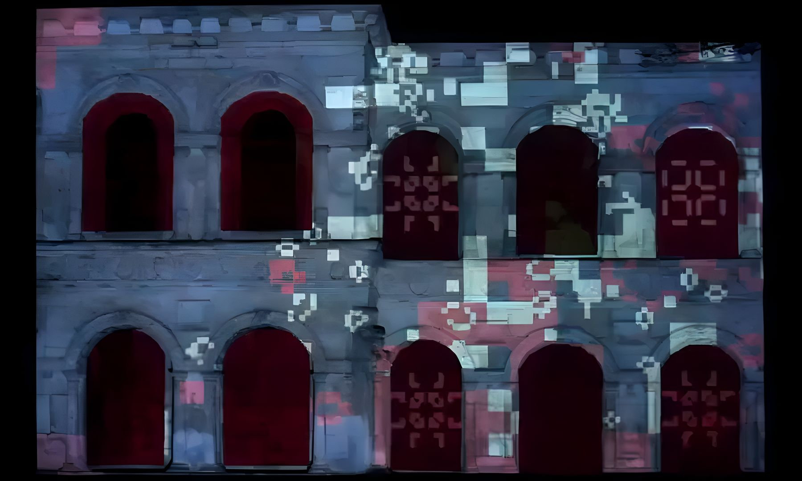
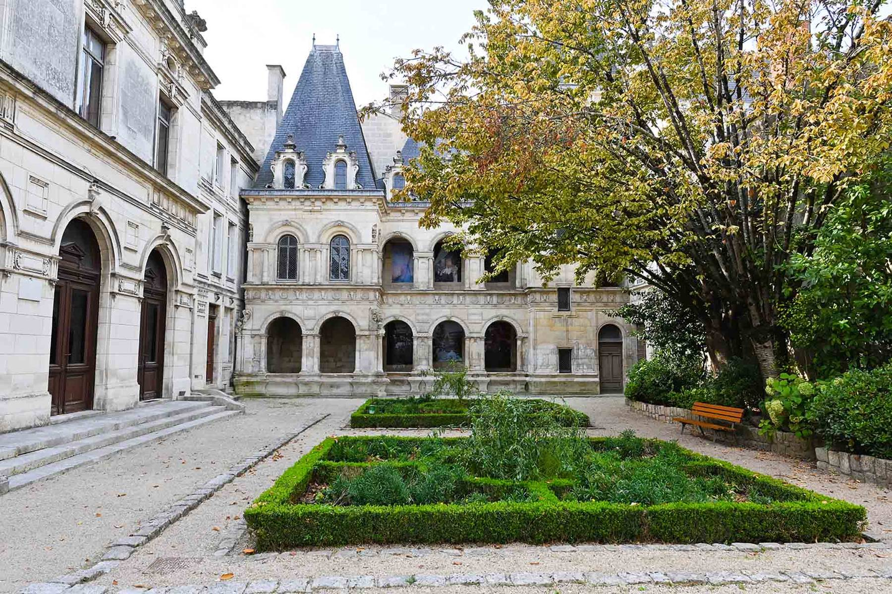

Machine de transcodage bit-cellule

The Machine de transcodage bit-cellule, is an audioVisual exploration of computation substrate and its evolution into ever-digitally-mediated organic cells. From binary light and logic gates that undergo the complexity of discrete agent simulation, to ASCII-defined cellular forms. This piece placed at the House of Henri II as the inauguration mapping of the Electronic Art Festival ZERO1 at La Rochelle, France.
Mapping / ASCII art / Inauguration

Exhibitions
- Festival des arts et cultures numériques ZERO1. Maison Henri II, La Rochelle, France, 2018.
Credits
- Project Lead, Script and Visual Development Mario Guzmán, Agustín Ramos Anzorena
- Sound Design Agustín Ramos Anzorena
- Sound Samples Mario Guzman
- Software Programming Agustín Ramos Anzorena
- Technical Assistance Vincent Martin
- Commissioned by Festival Zero 1 Centre Intermondes